Introduction
SfM was implemented to reconstruct a 3D point cloud and camera poses given 6 images as follows.
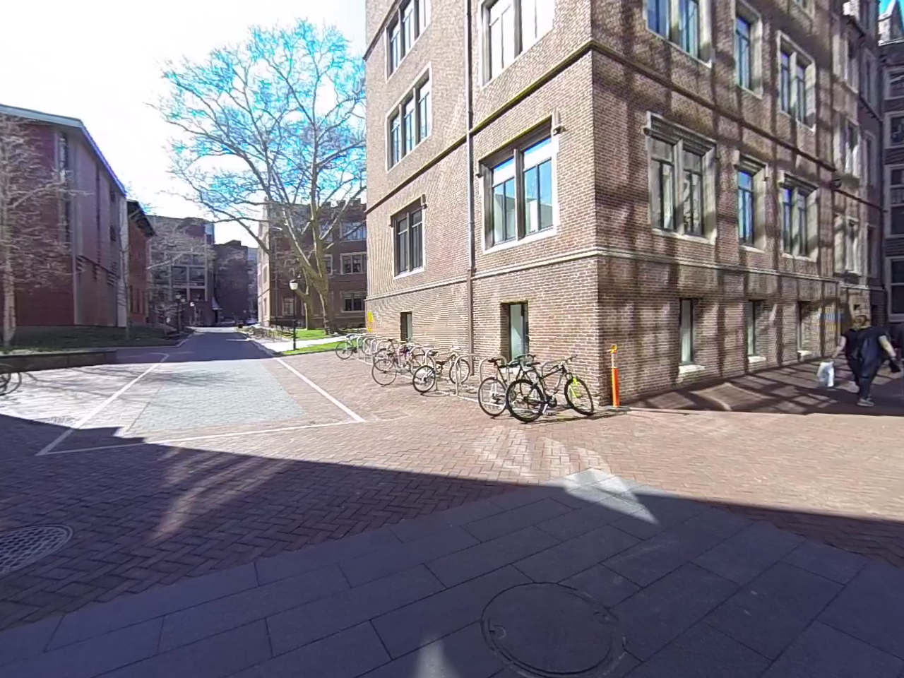
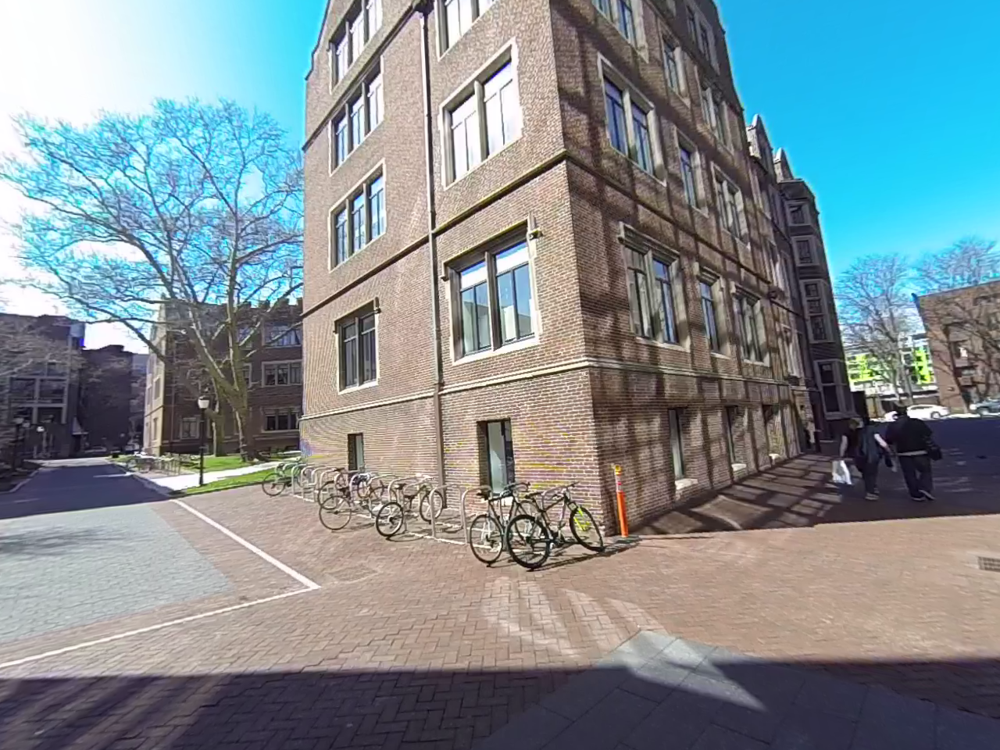
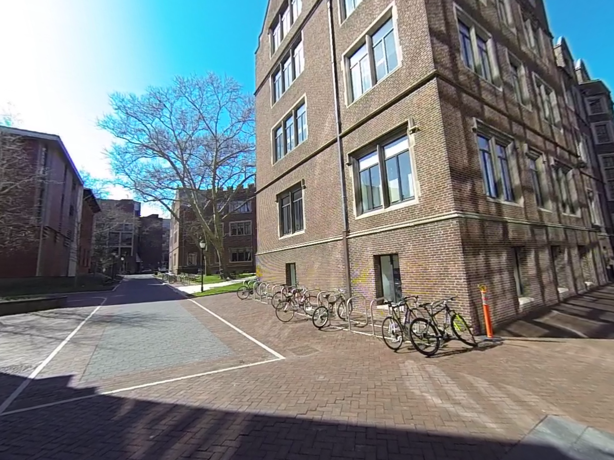
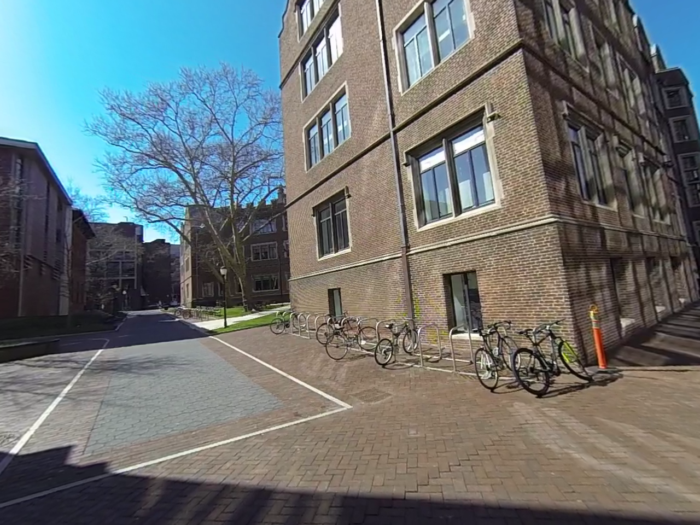
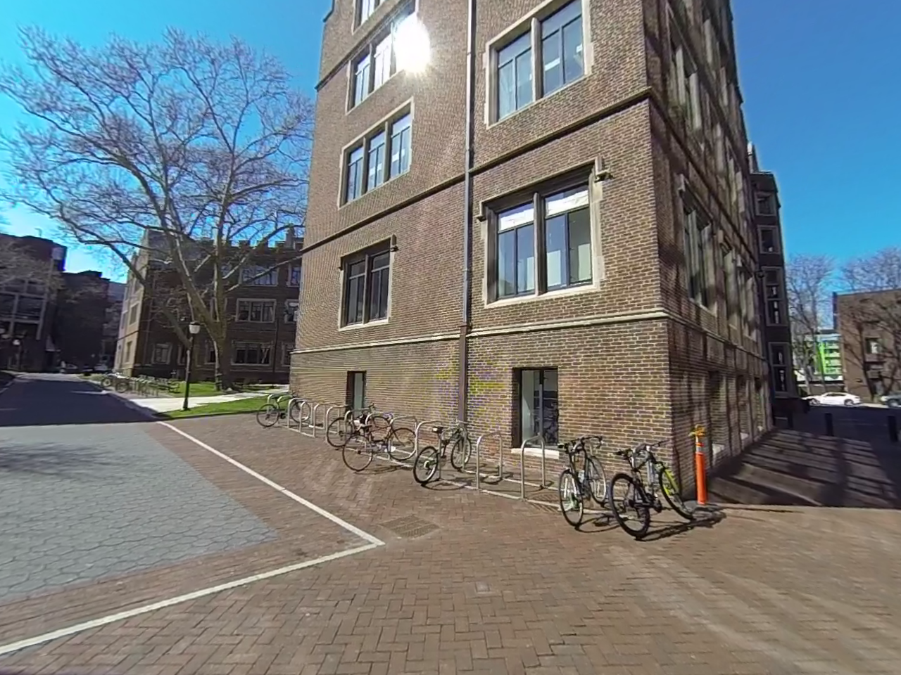
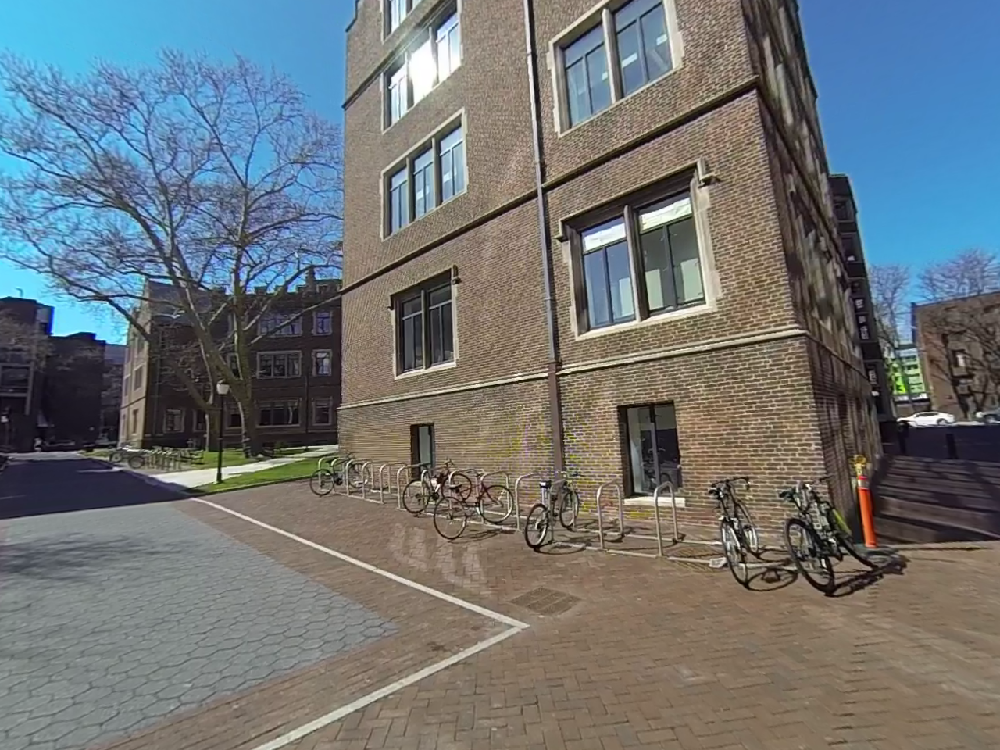
Perspective-n-point was used to register additional images given 3D-2D correspondences, and nonlinear optimization and RANSAC were performed. Nonlinear triangulation was applied to refine the 3D locations given camera poses in order to minimize reprojection error. Please refer to my Github for more details.
3D Point Cloud
The final 3D point clouds with all six camera poses were presented.
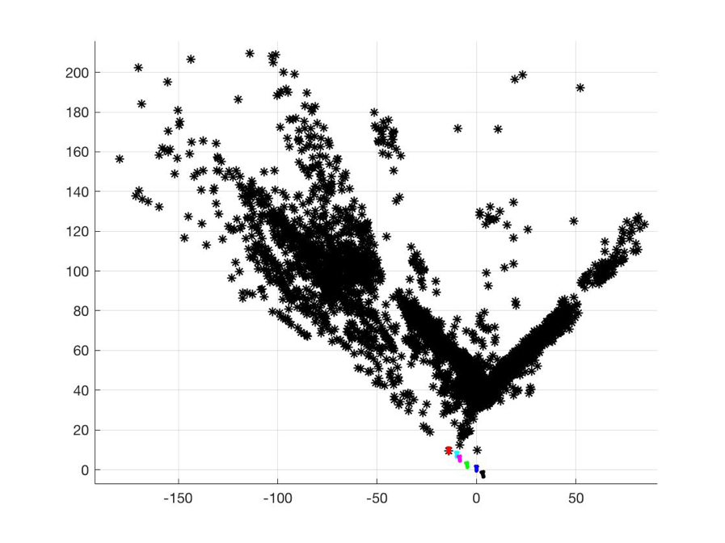
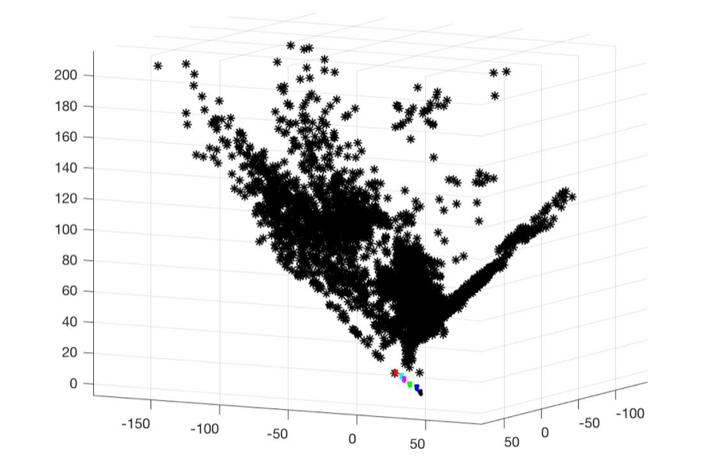
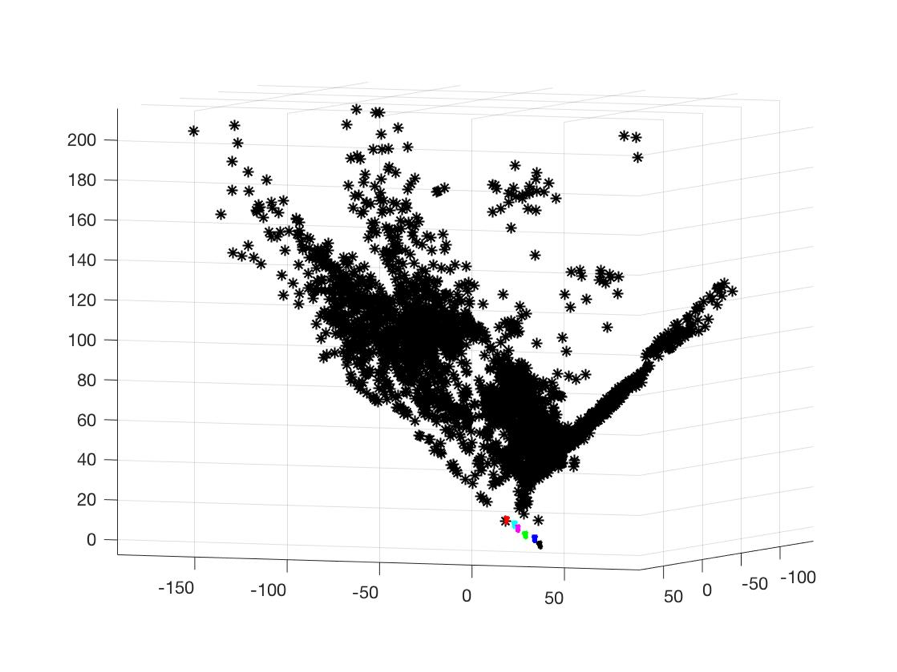
Also, following figure showed only the six camera poses.
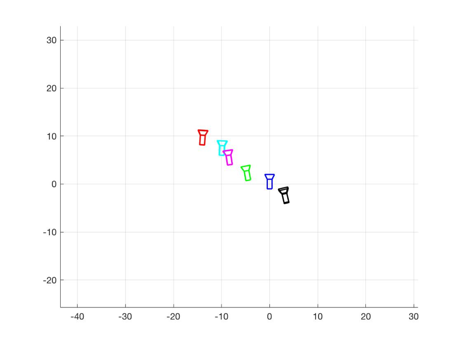
2D Reprojection Points
The 3D points shown above were reprojected to each image, and the 2D reprojection results were as follows.
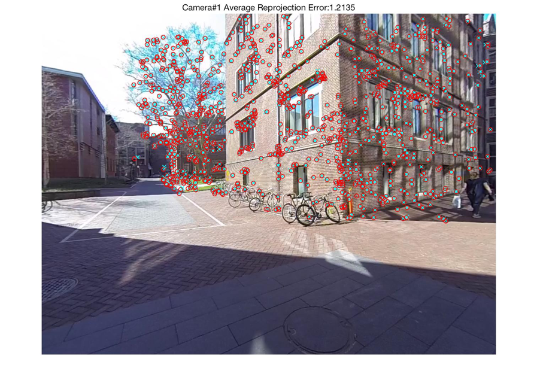
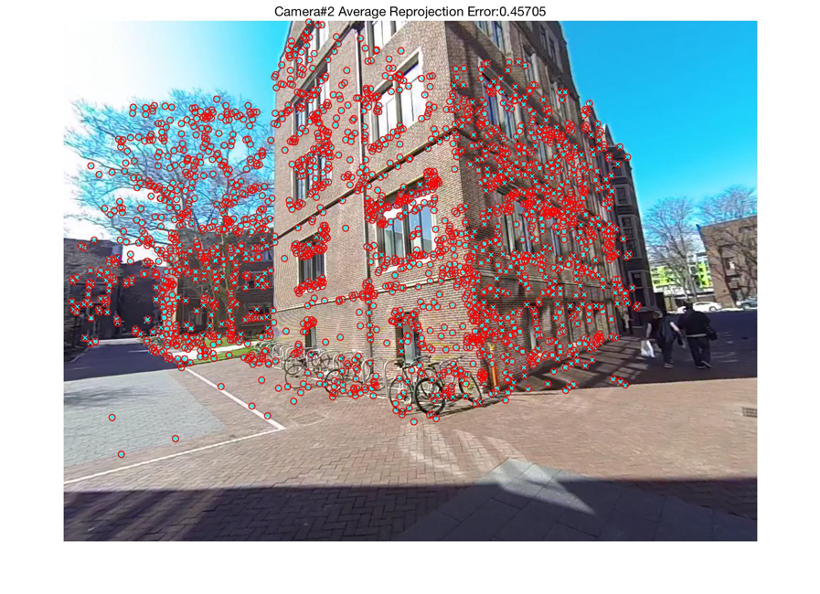
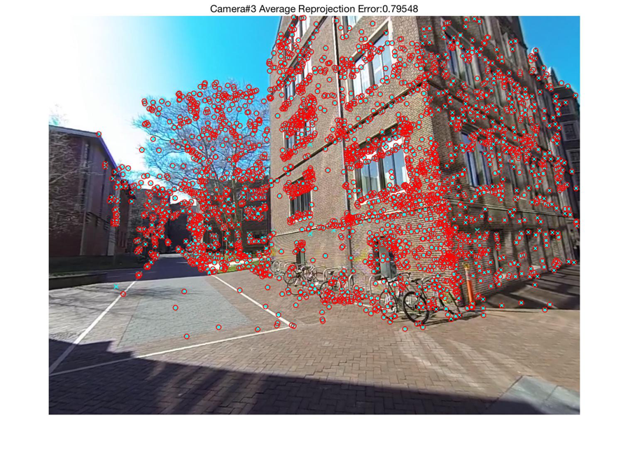
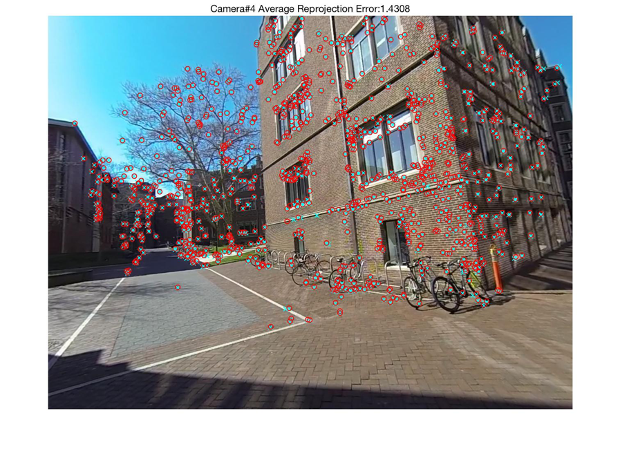